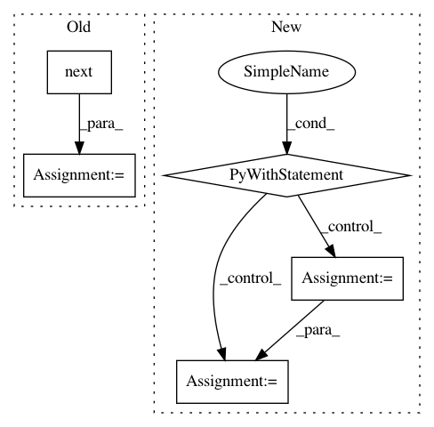

4ea27ba44e2ce56f06c2294d02e59031707e1ca5,gensim/matutils.py,MmReader,__init__,#MmReader#Any#Any#,538
Before Change
self.input, self.transposed = input, transposed
if isinstance(input, string_types):
input = open(input)
header = next(input).strip()
if not header.lower().startswith("%%matrixmarket matrix coordinate real general"):
raise ValueError("File %s not in Matrix Market format with coordinate real general; instead found: \n%s" %
(self.input, header))
self.num_docs = self.num_terms = self.num_nnz = 0
After Change
logger.info("initializing corpus reader from %s" % input)
self.input, self.transposed = input, transposed
with utils.file_or_filename(self.input) as lines:
header = utils.to_unicode(next(lines)).strip()
if not header.lower().startswith("%%matrixmarket matrix coordinate real general"):
raise ValueError("File %s not in Matrix Market format with coordinate real general; instead found: \n%s" %
(self.input, header))
self.num_docs = self.num_terms = self.num_nnz = 0
for lineno, line in enumerate(lines):
line = utils.to_unicode(line)
if not line.startswith("%"):
self.num_docs, self.num_terms, self.num_nnz = map(int, line.split())
if not self.transposed:
self.num_docs, self.num_terms = self.num_terms, self.num_docs
break
logger.info("accepted corpus with %i documents, %i features, %i non-zero entries" %
(self.num_docs, self.num_terms, self.num_nnz))
def __len__(self):
In pattern: SUPERPATTERN
Frequency: 4
Non-data size: 5
Instances
Project Name: RaRe-Technologies/gensim
Commit Name: 4ea27ba44e2ce56f06c2294d02e59031707e1ca5
Time: 2014-04-19
Author: radimrehurek@seznam.cz
File Name: gensim/matutils.py
Class Name: MmReader
Method Name: __init__
Project Name: balakg/posewarp-cvpr2018
Commit Name: 2cc74a324cc84821f3fbb793630f7328e54bd87e
Time: 2017-05-08
Author: balakg@thousandeyes.csail.mit.edu
File Name: posewarp_test.py
Class Name:
Method Name: train
Project Name: OpenNMT/OpenNMT-py
Commit Name: 7b205efea6b504de04311bc55d109cd28d8f3e0c
Time: 2016-12-21
Author: alerer@fb.com
File Name: OpenNMT/preprocess.py
Class Name:
Method Name: makeVocabulary